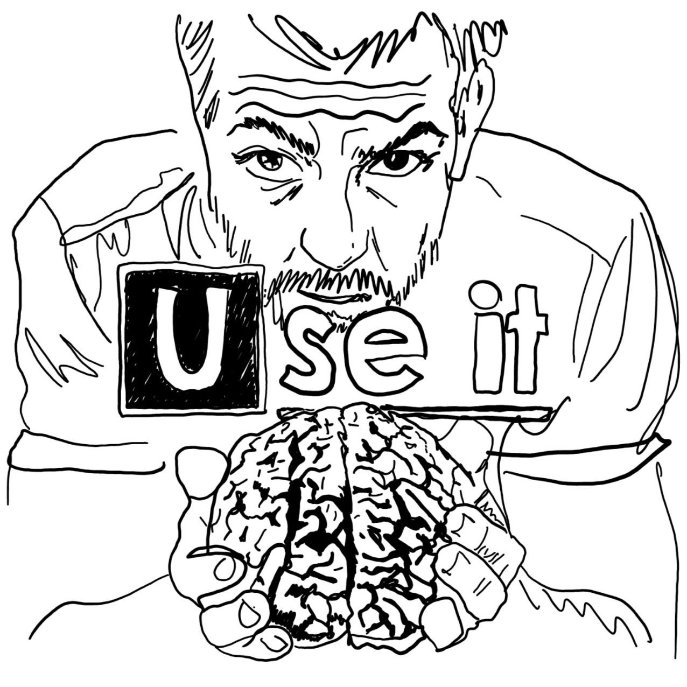

Diagnostic Center · USE ITДокументальні свідчення роботи відділення
Тут зберігаються документальні свідчення повсякденного життя діагностичного центру. Кожне фото — це маленька трагедія або маленька перемога. Іноді обидва одночасно.
Хаус не схвалює галереї. Він вважає що час витрачений на перегляд фотографій — це час який можна було б витратити на розгляд симптомів. Але ніхто не питав його думки.